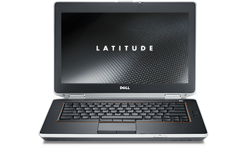
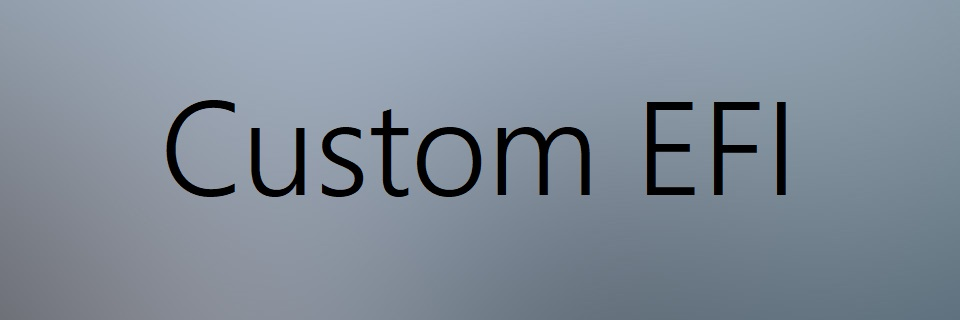

CoolBooter Video Guide
CoolBooter Guide
Introduction to CoolBooter
Hello there! CoolBooter is an amazing jailbreak tool you can use to DUAL-BOOT
your 32bit iOS device! Let's get started! And Special thanks to FakeKGB over on LTT again for recommending this to me.
A full jailbreak of your device is required. Also, backup your device. If your device is a 16GB model, you should backup and wipe your iPad so you have all of your disk space free.
CoolBooter currently supports going from any jailbroken iOS to an iOS firmware of your
choice on the iPhone 4, iPhone 4S, iPhone 5, iPhone 5c, iPad 2, iPad 3, iPad 4, iPad Mini 1st Gen, and iPod Touch 5th Gen. These devices must be running iOS 7.0 or newer and be jailbroken to install.
NOTE THIS IS POTENTIALLY DANGEROUS! THE PROCESS INVOLVES PARTITIONING YOUR DEVICE, WHICH COULD RESULT IN HAVING TO WIPE YOUR DEVICE. Neither me nor the creators are responsible for ANY issues.
Cloning the repo
Open Cydia and select "Sources" from the taskbar. In the top right corner there is a link that says "Edit". Tap it and in the top left a link that reads "Add" appears. Tap that. In the field that shows up, type in:
http://coolbooter.com. Choose "Add Source". When the files are downloaded, select "Return to Cydia" and tap on the CoolBooter repo. Tap on All Packages and then tap CoolBooter. In the top right corner, select the link that says "Install" or "Modify". In the pop-up menu, tap "Confirm". This will install the CoolBooter app. This may take a while depending on your internet connection.
When it is finished, tap Return to Cydia.
Installation
On your home screen, open the CoolBooter app. Tap "Install" and Choose the version of iOS you wish to install. Choose storage (requires at least 4GB) and tap "I'm Ready!". If you wish add a custom boot logo and if you want verbose mode (this means it will show progress output such as errors instead of the Apple logo). Keep your device plugged in and connected to the internet, as this may take a couple of hours, depending on your internet connection. When the process is complete you will need to reboot. After this, wait 60 seconds and kickstart the jailbreak. When the kickstart is complete, open the CoolBooter app and tap "Boot". It will load for a moment and then prompt you to lock your device. Do this by pushing the Top button on your iDevice. When the device reboots into your normal install, kickstart again (after 60 seconds) and tap "Boot" again. This will boot you into your specified installation!
Thanks for reading to the end! If you have any issues or questions, PM me on the
LTT forum.
CoolBooter Video Guide
back
CoolBooter currently supports going from any jailbroken iOS to an iOS firmware of your choice on the iPhone 4, iPhone 4S, iPhone 5, iPhone 5c, iPad 2, iPad 3, iPad 4, iPad Mini 1st Gen, and iPod Touch 5th Gen.
How to save SHSH blobs!
back
by EDK
Note: If images appear blurry, please click on them to view them full-size.
So, if you're a part of the jailbreaking world, you might have heard something about Apple
not signing versions of iOS after they are about 2 weeks old. You also may have heard about some things called "SHSH blobs" that can somehow help with this.
Ok, let me help you understand.
To keep jaibreakers on their toes, after Apple releases a software update, they stop signing older versions of iOS with their authenticity certificate. For example, in the image below you see the sofware list of signed and unsigned iPSWs (Apple software update files) for the iPhone SE (2020).
The signed versions can be restored with iTunes, and the unsigned versions cannot. In fact, you can't restore them at all without these little files with Apple's signature on them called "SHSH blobs". These files are contained in every signed and unsigned version of iOS. The ones in the signed versions of iOS have not expired and are constantly updated (up to two weeks after a new release has been created). Unsigned versions of iOS have expired blobs that are unusable.
So, what are they used for? Well, jailbreakers will save these blobs while the version is still being signed, for use later. These can be used to downgrade to a previous version of iOS after the version in question is no longer signed. Today I'm going to show you two methods of saving blobs.
Method 1 (easier, but not stable): TSS Saver
The most popular method of saving blobs is the online TSS Saver located at
tsssaver.1conan.com/v2/. This website will have you put in your ECID and device model, and if your saving a newer device's blobs, a thing called "APNonce".
To begin, open iTunes on Windows or macOS 10.14 and earlier, and Finder on macOS 10.15 and earler. Connect your device to the port open the menu in iTunes or Finder:
On the "Summary" tab there is a little string of text labeled "Serial Number". Click on that line of text until it says "ECID". Copy that text and go to the TSS Saver
website. With the previous version of TSS Saver, you had to use a seperate website to convert your ECID to HEX Decimal, but now that is built into TSS Saver. So go to the website (linked above), and click on "save". Paste your ECID into the field and select your device's model.
If you have a newer device, you are required to specify an APNonce.
Sadly you can't specify an APNonce with iTunes, so that's why I use something called "blobsaver".
UNDER CONTRUCTION
Dell Latitude E6420
back

Files contained in EFI_dell_latitude_e6420.zip/BOOT: BOOTx64.efi
Files contained in EFI_dell_latitude_e6420.zip/OC: config.plist, OpenCore.efi
ACPI
back
Files contained in the ACPI folder: Nothing here.
Bootstrap
back
Files contained in the Bootstrap folder: Bootstrap.efi
Drivers
back
Files contained in the Drivers folder:
AudioDxe.efi, CrScreenshotDxe.efi, ExFat.Dxe.efi, ExFatDxeLegacy.efi, HfsPlus.efi, HfsPlus32.efi, HfsPlusLegacy.efi, HiiDatabase.efi, NvmExpressDxe.efi, OpenCanopy.efi, OpenRuntime.efi, OpenUsbKbDxe.efi, PartitionDxe.efi, PartitionDxe32.efi, PartitionDxeLegacy.efi, Ps2KeyboardDxe.efi, Ps2MouseDxe.efi, UsbMouseDxe.efi, XhciDxe.efi
Kexts
back
Files contained in the Kexts folder:
ACPIBatteryManager.kext, AirportBrcmFixup.kext, AppleALC.kext, AtherosE2200Ethernet.kext, IntelMausi.kext, Lilu.kext, NVMeFix.kext, RealtekRTL8111.kext, SMCBatteryManager.kext, SMCDellSensors.kext, SMCLightSensor.kext, SMCProcessor.kext, SMCSuperIO.kext, USBInjectAll.kext, VirtualSMC.kext, VoodooPS2Controller-R6Bronxteck.kext, and WhateverGreen.kext
Resources
back
Files contained in the Resources/Font folder:
Font_1x.bin, Font_1x.png, Font_2x.bin, and Font_2x.png
Files contained in the Resources/Image folder:
Apple.icns, AppleRecv.icns, AppleTM.icns,
Cursor.icns, ExtAppleRecv.icns, ExtHardDrive.icns, HardDrive.icns, Selected.icns, Selector.icns, Shell.icns, Tool.icns, and Windows.icns
Files contained in the Resources/Label folder:
Apple.l2x, Apple.lbl, AppleRecv.l2x,
AppleRecv.lbl, AppleTM.l2x, AppleTM.lbl, EFIBoot.l2x, EFIBoot.lbl, Other.l2x, Other.lbl, ResetNVRAM.l2x, ResetNVRAM.lbl, Shell.l2x, Shell.lbl, Tool.l2x, Tool.lbl, Windows.l2x, and
Windows.lbl
Tools
back
Files contained in the Tools folder:
BootKicker.efi, ChipTune.efi, CleanNvram.efi, GopStop.efi,
HdaCodecDump.efi, KeyTester.efi, MmapDump.efi, OpenControl.efi, OpenShell.efi, ResetSystem.efi, RtcRw.efi, and VerifyMsrE2.efi
S-Aubry's Hackintosh Build
back

PC Components used in S-Aubry's Build:
Motherboard: ASUS WS X299 Sage 10G
CPU: Intel Core i9-10900x
RAM: Corsair Vengeance Pro
SSD: Samsung EVO Plus M.2 SSD
GPU: AMD RX 580
Wireless: Fenvi T919
Bonus component: Titan Ridge TB3 Thunderbolt 3 card
EFI folder components
Files contained in S-Aubrysefi.zip/BOOT:
BOOTx64.efi
Files contained in S-Aubrysefi.zip/OC:
config.plist, OpenCore.efi
Folders contained in S-Aubrysefi.zip:
ACPI, Bootstrap,
Drivers, Kexts, Resources,
Tools
ACPI
back
Files contained in the ACPI folder: Nothing here.
Bootstrap
back
Files contained in the Bootstrap folder: Bootstrap.efi
Drivers
back
Files contained in the Drivers folder:
AudioDxe.efi, CrScreenshotDxe.efi, ExFat.Dxe.efi, ExFatDxeLegacy.efi, HfsPlus.efi, HfsPlus32.efi, HfsPlusLegacy.efi, HiiDatabase.efi, NvmExpressDxe.efi, OpenCanopy.efi, OpenHFSPlus.efi, OpenRuntime.efi, OpenUsbKbDxe.efi, PartitionDxe.efi, PartitionDxe32.efi, PartitionDxeLegacy.efi, Ps2KeyboardDxe.efi, Ps2MouseDxe.efi, UsbMouseDxe.efi, and XhciDxe.efi
Kexts
back
Files contained in the Kexts folder:
AirportBrcmFixup.kext, AppleALC.kext, Lilu.kext, SmallTreeIntel8259x.kext, SMCProcessor.kext, SMCSuperIO.kext,
TSCAdjustReset.kext,
USBInjectAll.kext,
USBPorts.kext,
VirtualSMC.kext,
and WhateverGreen.kext
Resources
back
Files contained in the Resources/Font folder:
Font_1x.bin, Font_1x.png, Font_2x.bin, and Font_2x.png
Files contained in the Resources/Image folder:
Apple.icns, AppleRecv.icns, AppleTM.icns,
Cursor.icns, ExtAppleRecv.icns, ExtHardDrive.icns, HardDrive.icns, Selected.icns, Selector.icns, Shell.icns, Tool.icns, and Windows.icns
Files contained in the Resources/Label folder:
Apple.l2x, Apple.lbl, AppleRecv.l2x,
AppleRecv.lbl, AppleTM.l2x, AppleTM.lbl, EFIBoot.l2x, EFIBoot.lbl, Other.l2x, Other.lbl, ResetNVRAM.l2x, ResetNVRAM.lbl, Shell.l2x, Shell.lbl, Tool.l2x, Tool.lbl, Windows.l2x, and
Windows.lbl
Tools
back
Files contained in the Tools folder:
BootKicker.efi, ChipTune.efi, CleanNvram.efi, GopStop.efi,
HdaCodecDump.efi, KeyTester.efi, MmapDump.efi, OpenControl.efi, OpenShell.efi, ResetSystem.efi, RtcRw.efi, and VerifyMsrE2.efi